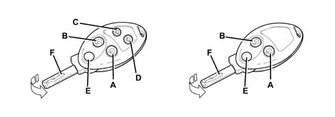
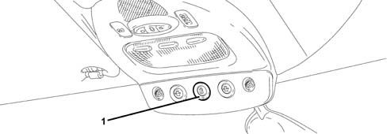
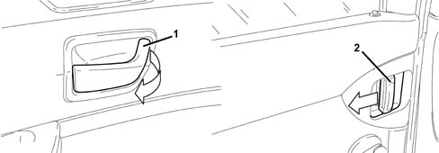
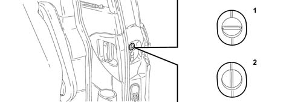
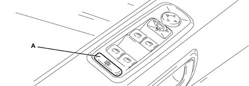
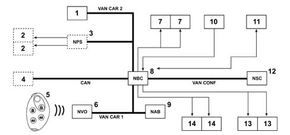

LOCKING OF PARTS THAT CAN BE OPENED
- Path
- Descriptions > 55 ELECTRICAL EQUIPMENT > 5505 INSTRUMENT/GAUGE ELECTRICAL CIRCUITS > 5505A MULTI-FUNCTION COMPONENTS > LOCKING OF PARTS THAT CAN BE OPENED
- Kind
- system description
- Applies to
- all engines; all production periods
- Interactive page
- https://sloeber94.github.io/elrnDB-fUlss/en/#/179000407
Applies to: all engines; all production periods
INTRODUCTION
The vehicle is equipped with:
- two front doors with a lock barrel and manual opening device on the doors for opening them from the inside, when one of the internal opening controls is operated (even for the sliding side doors) with the vehicle is locked mode, the vehicle is unlocked.
- a tailgate with an electric lock and an exterior opening button,
- two sliding side doors, for the second row of seats with a manual opening control on the inside that can be switched off mechanically or electrically for child locks and can be switched off electrically for total locking and an exterior opening control that can be switched off electrically,
- a central locking button with a display of the status of the parts that can be opened,
- a remote control with two buttons for locking/unlocking the vehicle (and a remote control with 4 buttons, 2 of which are designed for the electrical opening of the motorized side doors).
- a fuel tank flap which cannot be electrically locked (fuel tank cap with key).
Versions/options
Depending on the devices fitted and the configuration of the vehicle, the locking system may be the following types:
- simple (regular locking),
- total in 1 stage (superlocking is engaged the first time the button is pressed or the first time the key is turned in the driver's door lock),
- total in 2 stages (superlocking is engaged the second time the button is pressed or the second time the key is turned in the driver's door lock if this is done within 5 seconds of the initial locking action).
Superlocking means that the doors cannot be opened from the inside using the electrical switching off mechanism for the interior door control.
Optional alarm connected to the total locking.
The possibility of electrically operating the child locks using a button on the front courtesy light to activate or deactivate this safety feature (if electric rear windows are fitted, this button is used for the electric rear windows).
The motorized opening/closing of each sliding side door using the control buttons on the front courtesy light and at the base of the doors and a remote control with four buttons (locking, unlocking, right door and left door).
Central locking
The first locking control (simple locking or superlocking) using the remote control or the key, involves the central locking of the windows and the closing of the roofs that have been opened using a sliding movement (this control is not effective if the roofs have been opened at an angle).
Composition
The control devices are:
- a remote control transmitter,
- 4 internal opening controls, one on each door,
- an external opening button located on the tailgate,
- a central locking button located near the centre front courtesy light.
The devices controlled are:
- one driver's door lock,
- one front passenger door lock,
- 2 passenger door locks,
- one electric lock in the tailgate.
Remote control transmitter
The keys are designed for:
- the ignition switch
- the driver's and passenger door locks
- the remote control door opening/closing system
- the alarm system (if fitted)
- the disabling of the passenger air bag
- the fuel tank cap lock
- the glove compartment lock.
The key may have 2 or 4 buttons:
- A for activating the central locking control, switching on the alarm and the location function.
- B for activating the release of the central locking and switching off the alarm.
- C for activating the right sliding side door opening/closing control.
- D for activating the left sliding side door opening/closing control.
Pressing button A for longer activates the "location" function: all the interior courtesy lights, together with the direction indicators, come on for a few seconds.
The key is also fitted with a metal insert E which can be enclosed in the actual key fob after pressing button F.
Press button F again to make the metal insert come out of the key fob.

The remote control functions (locking, unlocking, window management) are deactivated if:
- the key is in position +ACC,
- the key is in position +MAR,
- the key has been inserted in the anti-theft device a minute after the driver's door has been opened,
- the key is inserted, one minute after chaning from position +ACC to the OFF position.
As a general rule, the remote control will be switched off so that the vehicle is capable of identifying the ignition OFF position.
Resynchronization of remote control
In order to synchronize the remote control:
- turn the ignition key to the +ACC position,
- keep one of the remote control buttons pressed for 10 seconds,
- remove the key from the ignition switch.
Central locking button and LED
The central locking switch is the type with a button with a red LED. The button is located in the centre courtesy light.
The button makes it possible to lock and unlock the vehicle; it is activated in the following conditions:
- the moment the vehicle is unlocked using the remote control,
- the moment the vehicle is unlocked using the door lock.
This button is not activated simultaneously by a command received from the remote control, the door lock or following a new automatic closing operation.
When the vehicle is locked, the vehicle locked information is given:
- with the engine running (key in ACC or MAR position); through the switching off of the LED,
- with the engine switched off (engine management immobilized): through the slow flashing of the LED.

- 1 - Central locking button
Red LED types of flashing
Condition | LED display |
|---|---|
Totally immobilized | Flashing at 1 Hz |
Locked with key, with key not detected by anti-theft device | Flashing at 1 Hz |
Locked with key or button, with key detected by anti-theft device | Off |
Unlocked | Light on constantly |
Unlocked and engine not immobilized (*) | Flashing at 2.5 Hz when key is turned to MAR for 30 secs. |
The LED in the button advises that the vehicle is immobilized, except in the case of an NCM locking/unlocking malfunction for 30 seconds from when the key is turned to the ON position.
Entering the vehicle:
Condition | LED display |
|---|---|
Locked with remote control or key, with key not detected by anti-theft device | Flashing at 1 Hz |
Vehicle released, key inserted or not inserted. | Light on constantly |
Vehicle immobized, key detected by anti-theft device (locked with the button and key detected by the anti-theft device and automatic locking whilst driving) | Off |
Vehicle locked using button, key not detected by anti-theft device | Off |
When the engine is switched off and as long as the vehicle has not been locked using the remote control or the key.
Condition | LED display |
|---|---|
Vehicle released (with button), key inserted or not inserted. | Off |
Vehicle released, key inserted or not inserted. | Light on constantly |
Leaving the vehicle
Condition | LED display |
|---|---|
Vehicle released, key inserted or not inserted. | Light on constantly |
Vehicle locked with remote control or key, with key not detected by anti-theft device | Flashing at 1 Hz |
Interior opening control
The four doors can be opened from the inside.
The activation of this internal opening control opens and unlocks the door simultaneously if it was locked.
This operation also unlocks all the other doors and activates the boot button.

- 1 - Handle on front door
- 2 - Handle on rear door
Driver's door lock
The driver's door is fitted with a 3- position electric lock:
- Unlocked position,
- Locked position,
- Superlocked position (where fitted).
The driver's door is fitted with a lock barrel and the lock can also be locked directly by the user using the ignition key.
Front passenger door lock
The front passenger door is fitted with a 3- position electric lock:
- Unlocked position,
- Locked position,
- Superlocked position (where fitted).
Passenger door locks (CHILD LOCKS)
The rear doors are fitted with a 3- position electric lock:
- Unlocked position,
- Superlocked position (where fitted).
- Locked position,
The rear doors do not have a lock barrel, the locks are not therefore mechanically accessible from the outside of the vehicle.
The two rear door locks have a child lock safety function which can be switched on either manually or electrically using the NBC.
Mechanical child locks
This consists of switching off the internal opening of the rear doors by turning a button located on the door. If the vehicle is in the "Locked" position and one of the rear doors is in the "Child Lock" position, when the internal opening control for the rear door is operated neither that specific door nor any of the other parts that can be opened are unlocked.

- 1 - Child-proof locks switched off
- 2 - Child-proof locks switched on
Electric child locks
If the vehicle is equipped with rear electric windows, a button located on the driver's door can be used to stop the possibility of them being operated using the buttons at the back of the vehicle.
If the vehicle is equipped with rear sun roofs, the same button located on the driver's door can be used to stop the possibility of them being operated using the buttons at the back of the vehicle.
If the vehicle is equipped with electric child locks, the same button is used simultaneously to switch on the child locks, when one of the sliding doors is closed the child lock function works immediately.
When the child lock function for the two rear doors is switched on: a message appears for a preset period in the multifunction display after the vehicle is started.
Activating the button (locking or unlocking) reactivates the "child lock condition" information shown on the display.

- A - Electric child lock on button
Fuel tank flap
The fuel tank flap has a lock with a key.
Rear tailgate lock
The tailgate is fitted with a 2- position electric lock:
- locked position (deactivated position),
- "released" position (activated position),
the tailgate lock does not have a lock barrel, the opening of the tailgate is controlled by a button in the number plate light assembly.
The exterior button is:
- switched off if the vehicle is locked (normally or superlocked).
- activated: with the ignition key in the ACC or MAR position or 1 minute after the key is turned from the ACC (or MAR) position to the OFF position (contact interrupted) or until the driver's door is closed (after opening); if it is closed before 1 minutes has elapsed, or until the vehicle is locked using the remote control or the key, or if locking has taken place automatically whilst driving or with the help of the central locking button.
Sun roofs
The sun roof is closed through a sliding motion associated with the locking or superlocking of the vehicle using the remote control or the key.
FUNCTIONS
One of the sliding side doors is managed exactly the same way as a conventional door for the vehicle locking function:
- when there is a command to lock the doors there is a "refusal" if one of the sliding side doors is open
- an opening command from the inside unlocks all the parts that can open,
- a door open signal is displayed (on the multifunction screen) if one of the sliding side doors is open whilst the vehicle is moving.
Simple or super-locking lock in 1 stage
The locking strategies for the parts of the vehicle than can open can be configured in such a way that a locking command using the button in the remote control or turning the key in the lock barrel directly implements the superlocking function.
A locking command using the central locking button produces a "refusal" if one of the parts that open (door, sliding side door or boot) is open.
The vehicle locks allow a direct move from the superlocking condition to the simple locking condition.
The simple locking condition can be accessed:
- by pressing the locking button in the remote control within 5 seconds of the previous pressing and with the parts that open in the superlocking condition,
- by turning the key in the locking direction within 5 seconds of turning it previously with the parts that open in the superlocking condition.
Simple or super-locking lock in 2 stages
The locking strategies for the parts of the vehicle than can open can be configured in such a way that a locking command using the button in the remote control or turning the key in the lock barrel implements the simple locking function: a second locking command (within 5 seconds of the first one) produces the superlocking function.
In practice there is a:
- move from the unlocked condition to the locked condition by pressing the locking button in the remote control or turning the key in the locking direction with the opening parts unlocked,
- move from the locking condition to the superlocking condition by pressing the locking button in the remote control or turning the key in the locking direction within 5 seconds of the previous command with the opening parts locked,
- move from the superlocking condition to the unlocked condition: by pressing the unlocking button in the remote control or turning the key in the unlocking direction.
Exterior/interior signals for vehicle locking/unlocking
Exterior signals: direction indicators
The display through the flashing of the direction indicators only takes place:
- if the action (unlocking/locking/superlocking) has been achieved,
- if the command has been carried out using the remote control or the key or through the internal opening control.
Initial condition | Final condition | Direction indicators display |
|---|---|---|
Unlocked | Locked | Light on constantly for 2 secs |
Unlocked | Superlocking | Light on constantly for 2 secs |
Locked | Unlocked | Flashing at 5 Hz for 2 secs |
Superlocking | Unlocked | Flashing at 5 Hz for 2 secs |
Superlocking | Locked | Light on constantly for 2 secs |
Interior signals: front and rear courtesy lights
The switching on of the courtesy lights is connected to the locking function for the parts that open in the following circumstances:
- at least one of the vehicle doors is open: CONSTANTLY,
- vehicle unlocking: TIMED.
The courtesy light switches off in the following circumstances:
- after the closing of the last open door,
- through the simple locking of the vehicle,
- through the superlocking of the vheicle
Actions | Lighting condition (with timer) |
|---|---|
Opening of one door | Gradual switching on (10 minute time delay) |
Closing of the last part that opens | Gradual switching off (after 30 secs) |
Unlocking | Gradual switching on (30 sec timer and gradual switching off) |
Locking / Superlocking | Gradual switching off 5 secs |
Luggage compartment interior lighting
The lighting for the luggage compartment is connected to the opening of the tailgate.
Actions | Lighting condition (with timer) |
|---|---|
Tailgate opening | Switching on (10 minute time delay) |
Tailgate closing | Deactivation |
Central locking for parts that open system configuration
The choice of closing mode for the parts that open (simple locking, 1 stage or 2 stage superlocking) can be programmed in the production plant.
COMPLEMENTARY FUNCTIONS
Automatic closing with vehicle driving
The locking of the parts that can open takes place automatically, if the relevant function is activated, when the speed of the vehicle reaches 10 km/h. The tailgate is locked automatically whether the function is activated or deactivated.
When the following conditions occur simultaneously:
- automatic locking function whilst driving,
- ignition key in ON position,
- vehicle locked after activation speed has been exceeded,
pressing the central locking button briefly (for less than 3 seconds) deactivates the automatic locking function until it is switched off.
Activation/deactivation of function
The switching off and activation of the automatic locking function whilst driving can be activated by pressing the central locking button for a while.
The activation/deactivation of this function does not change the vehicle locking condition.
The activation/deactivation of the function is signalled by means of an auditory signal accompanied by a message (on the multifunction screen) that informs the driver of the new function condition; this only takes place if the ignition is ON with the engine either running or switched off.
Vehicle location
The location function (switching on of the interior courtesy lights plus the direction indicators for several seconds) can be activated in the following cases:
- with the vehicle in the simple locking condition, by pressing the locking button on the remote control,
- with the vehicle in the superlocking condition, by pressing the locking button in the remote control after having recorded the last locking or superlocking command.
When this function is activated, all the direction indicators flash in unison for 10 seconds at a frequency of 5 Hz.
This function is recognized by the system at a maximum distance of 30 metres from the vehicle.
Vehicle ventilation
A second unlocking command (remote control or key) in the 5 seconds following the first command to unlock the vehicle results in all the windows (except the sun roofs and the rear panels) being fully opened.
Door opening in the case of an accident
In the case of an accident, the NBC receives the air bag activation from the NAB and controls the opening of all the doors.
OPERATING PRINCIPLE
The principle diagram is illustrated below.

- 1 - Control on driver's door (acquires the child lock switch status)
- 2 - Electric sliding rear door motors (left and right)
- 3 - Sliding Door Node (NPS: manages the electrical movement of the rear doors)
- 4 - Brake Node (NFR: provides information relating to the vehicle speed)
- 5 - Remote control (allows the locking, unlocking and location of the vehicle from a distance)
- 6 - Steering Wheel Node (NVO: incorporates the high frequency receiver and manages the signal reception)
- 7 - Front door locks
- 8 - Body Computer Node (NBC: manages the unlocking, locking, superlocking, location of the vehicle and the thermal protection of the actuators)
- 9 - Air Bag Node (NAB: provides information that an accident has taken place)
- 10 - Central locking button (allows the locking/unlocking of the vehicle from the inside)
- 11 - Tailgate lock (incorporates an actuator that allows the locking/unlocking of the tailgate and a switch that provides tailgate open/closed information)
- 12 - Multifunction Screen Node (NSC: displays messages)
- 13 - Rear door lock actuators
- 14 - Rear door child safety lock actuators
Adjustment of parts that open function
The condition of the door open contacts for the front and rear doors provides the following information:
- for locks with simple locking: locking condition,
- for locks with superlocking: unlocking condition,
A second route provides the following information:
- for locks with simple locking: unlocking condition,
- for locks with superlocking: locking and superlocking condition.
The NBC carries out the adjustment for these 2 ways (through the front locks) and identifies the vehicle condition (door open/closed, vehicle locked/unlocked, etc.).
The door open contacts condition for the rear doors (including the boot lock) is also recorded by the NBC.
Door lock operation function
The NBC receives and manages the orders controlling the locking of the vehicle:
- it manages the orders controlling the total locking, the child lock motor ensures the control of the total rear locking,
- it ensures the thermal protection of the locks,
- it controls the motors for the various locks (if the conditions are satisfied),
- it manages the display commands in parallel to the lock operation.
Boot lock operation function
The boot lock does not have a locked, unlocked or superlocked condition, only a "boot open or closed" condition.
The NBC manages the boot lock opening motor when the doors open contact provides the "boot closed" information.
Child lock operation function
The NBC manages the orders that control the child locks. The child lock motor controls the total rear locking.
ELECTRICAL STRUCTURE
There is one less lead for each front door lock/NBC connection for locks with simple locking. The boot/NBC connection always comprises three leads.
The total locking of the rear doors is guarnteed by the child lock motor.
Lock heat protection
The door locks are equipped with heat protection implemented by the NBC.
The boot lock is not equipped with heat protection.
Connection specifications
Luggage compartment electric lock
Parameter | Minimum | Nominal | Maximum | Duration | Note |
|---|---|---|---|---|---|
Voltage | 10V | 13.5V | 16V | Boot opening control | |
Intensity | 4A | 210ms±10 | Boot opening control | ||
Intensity | 5mA | 10mA | 15mA | Door open contact |
Information supplied by simple lock
Parameter | Minimum | Nominal | Maximum | Duration | Note |
|---|---|---|---|---|---|
Intensity | 5mA | 10mA | 15mA | unlocking information | |
5mA | 10mA | 15mA | door open contact + locking information | ||
Drop in voltage | 50mV | For = 0.1 A | |||
Refusal | 10ms max | Max duration of "refusal" at lock contacts |
Simple lock actuator
Operation | Duration | Typical I | I max | V min | Typical V | V max | Logic | Logic |
|---|---|---|---|---|---|---|---|---|
(ms) | (A) | (A) | (V) | (V) | (V) | Via C | Via D | |
S %rarr; B | 500 | 4A for lock | 5.5A for lock | 10V | 13.5V | 16V | + | - |
S %rarr; B | - | + |
Information supplied by total lock
Parameter | Min. | Type | Max | Duration |
|---|---|---|---|---|
Intensity | 5mA | 10 mA | 15mA | |
Intensity | 5mA | 10 mA | 15mA | |
Intensity | 4 mA | 5.5mA | (1) | |
Intensity | 8 mA | 11mA | (1) | |
Intensity | 4 mA | 5.5mA | (1) | |
Drop in voltage | 50mV | |||
Refusal | 10ms max |
Total lock actuators
Operation | Duration | V min | Typical V | V max | Logic (power supply) | ||
|---|---|---|---|---|---|---|---|
Via B | Via S | Via SB | |||||
S %rarr; B | 500ms | 10V | 13.5V | 16V | + | - | - |
B %rarr; S | 500ms | - | + | + | |||
S or B %rarr; SB | 500ms | + | - | + | |||
SB %rarr; S | 500ms | - | + | - | |||
SB %rarr; B | 500ms | - | + | - | |||
500ms | + | - | - | ||||
Child lock actuator
Operation | Duration | Typical I | I max | V min | Typical V | V max | Logic | |
|---|---|---|---|---|---|---|---|---|
Via B | Via S | |||||||
Active safety | 500ms | 4A for lock | 5.5A for lock | 10V | 13.5V | 16V | + | - |
Passive safety | - | + | ||||||
CONNECTIONS
Total lock
LOCKS
Left and right front door lock assembly: 6-way brown.
Pin | Function |
|---|---|
1 | Door open contact unlocking information |
2 | bodywork earth |
3 | unlocking control |
4 | Locking/unlocking information |
5 | locking elements control |
6 | Elements total locking |
MOTORS
Left and right child lock motor: 3-way black.
Pin | Function |
|---|---|
1 | child lock opening control |
2 | not connected |
3 | child lock closing control |
RELAYS
Child lock relay: 10-way black.
Pin | Function |
|---|---|
1 A | + VAN CAR2 |
2 A | Child lock opening relay |
5 A | + battery from NBC |
4 A | bodywork earth |
3 A | child lock opening control |
1 B | + VAN CAR2 |
2 B | Child lock closing relay |
5 B | + battery from NBC |
4 B | bodywork earth |
3 B | child lock closing control |
Central locking
LOCKING/UNLOCKING BUTTON
Door locking/unlocking switch with button: 6-way brown
Pin | Function |
|---|---|
1 | vehicle protection warning light operation |
2 | not connected |
3 | bodywork earth |
4 | + warning light standby |
5 | not connected |
6 | Element general locking information |
Locks
Left and right front door lock assembly: 6-way brown.
Pin | Function |
|---|---|
1 | door open contact + left/right front unlocking |
2 | bodywork earth |
3 | element unlocking control |
4 | left/right front lock unlocking information |
5 | element locking control |
6 | door open contact + left/right front locking |
Motors
Left and right rear door locking motors: 3-way black.
Pin | Function |
|---|---|
1 | control + element unlocking |
2 | not connected |
3 | control + element locking |
Luggage compartment: button
Boot opening switch: 2-way black.
Pin | Function |
|---|---|
1 | boot external switch information |
2 | bodywork earth |
Luggage compartment: lock
Boot lock assembly: 3-way green.
Pin | Function |
|---|---|
1 | boot opening control |
2 | bodywork earth |
3 | boot open contact |
End of travel contact board
Left/right rear door end of travel contact: 2-way black.
Pin | Function |
|---|---|
1 | left/right rear door open contact |
2 | bodywork earth |
Flat contact board
Left and right side contact: 10-way.
Pin | Function |
|---|---|
1 | element unlocking control |
2 | child lock closing control |
3 | child lock opening control |
4 | locking elements control |
5 | left/right sliding side door opening/closing motors control |
6 | earth |
7 | left/right rear electric window descent information |
8 | left/right rear electric window ascent information |
9 | left/right rear electric window ascent + motor |
10 | left/right sliding side door integral contact lock information |
DIAGNOSTICS
The NBC carries out the diagnosis of:
- the control outputs for the door and boot actuators,
- the consistency of the front lock inputs,
- the consistency of the door open contact in the boot with the boot opening control,
- the consistency of the locking/unlocking requests (locking contacs) for the SC lock; if the request > 1mn %rarr; faulty.
The NBC includes a session:
- for reading the available inputs in diagnostic mode which makes it possible to check the contacts for the front, rear and boot locks.
- for managing the door and boot lock motors, this session is available in the diagnostic mode.
SUMMARIZED PASSAGE BETWEEN DIFFERENT CONDITIONS
Vehicle locked: change to unlocked condition
Key (lock barrel turned in the unlocking direction) | Unlocking of all parts that open |
|---|---|
Central locking button | - Unlocking of all parts that open if speed = 0 |
- Unlocking of the 4 doors only if the speed is different from 0 | |
Remote control: Unlocking button | Unlocking of all parts that open |
Front or rear door internal opening control | Unlocking of all the parts that open, except if the child locks are activated |
Automatic in the case of an impact | Unlocking of all parts that open |
Vehicle unlocked: change to fully locked condition
Key (first lock barrel position in the locking direction) | - Total locking of the vehicle if all the parts that open are closed |
- "Refusal" if at least one part that opens is open | |
- Mechanically impossible if the door in question is open | |
Remote control: locking button | - Total locking of the vehicle if all the parts that open are closed. |
- "Refusal" if at least one part that opens is open |
Vehicle unlocked: change to locked condition
Central locking button | - Total locking of the vehicle if all the parts that open are closed. |
- "Refusal" if at least one front door is open | |
- No "refusal" if one rear part that opens is not properly shut (1) | |
- No "refusal" if the boot is not properly shut (the buttons are switched off). | |
Automatic after one unlocking using the remote control if none of the parts that open is open after 30 seconds have elapsed | - Locking of all the parts that open, if the key is not detected by the anti-theft device, otherwise no action. |
Automatic when the speed of the vehicle exceeds 10 km/h | - Locking of all the parts that open if the automatic locking function whilst driving is fitted and has been activated by the user (deactivated by the user). |
- "Refusal" if one of the front doors is not properly shut. | |
- Locking of the tailgate only, without a "refusal" if the automatic locking function whilst driving is not fitted or has been deactivated by the user. |
Vehicle completely locked: change to unlocked condition
Key (lock barrel in the unlocking direction) | Unlocking of all parts that open |
Remote control: Unlocking button | Unlocking of all parts that open |
Vehicle completely locked: change to locked condition
Key (second lock barrel position in the locking direction within 5 seconds of the first position) | Locking of all parts that open |
Detection of the presence of the key in the anti-theft device | Locking of the vehicle |
Vehicle locked: change to unlocked condition
Key (lock barrel in the unlocking direction) | Unlocking of all parts that open |
Central locking button | Unlocking of all parts that open if speed = 0 |
Unlocking of the 4 doors only if the speed is different from 0 | |
Remote control: Unlocking button | Unlocking of all parts that open |
Front or rear door internal opening control | Unlocking of all the parts that open, except if the child locks are activated |
Automatic in the case of an impact (with key in ON position) | Unlocking of all parts that open |
Vehicle fitted with simple lock
The table below illustrates all the possible states for the locks in the case of a locking command for vehicles fitted with simple locking.
Condition before the command | Condition after the command | Closing of windows and sun roofs* | Location | ||
|---|---|---|---|---|---|
Remote control locking button | press | S | B | (1) | |
press | B | B | X | ||
Lock with key | S | B | (2) | ||
Vehicle fitted with total lock in one go
The table below illustrates all the possible states for the locks in the case of a locking command for vehicles fitted with one stage superlocking.
Condition before the command | Condition after the command | Possible refusal | Closing of windows and sun roofs* | Location | ||
|---|---|---|---|---|---|---|
Remote control locking button | press | S | SB | X | (1) | |
press within 5 secs of last pressing | SB | B | ||||
press 5 secs after last pressing | SB | SB | X | |||
press | B | B | X | |||
Lock with key | catch | S | SB | X | (2) | |
catch with 5 secs of last catch | SB | B | ||||
Vehicle fitted with super-locking in two goes
The table below illustrates all the possible states for the locks in the case of a locking command for vehicles fitted with two stage superlocking.
Condition before the command | Condition after the command | Possible refusal | Closing of windows and sun roofs* | Location | ||
|---|---|---|---|---|---|---|
Remote control locking button | press | S | B | X | (1) | |
press within 5 secs of last pressing | B | SB | ||||
press 5 secs after last pressing | B | B | X | |||
press | SB | SB | X | |||
Lock with key | catch | S | B | X | (2) | |
catch with 5 secs of last catch | B | SB | ||||
Vehicle unlocking
The table below illustrates all the possible states for the locks in the case of an unlocking command (for vehicles fitted with simple locking or one or two stage superlocking.
Condition before the command | Condition after the command | Ventilation | ||
|---|---|---|---|---|
Remote control locking button | press | B or SB | S | |
press | S | X | ||
Lock with key | catch | B or SB | S | |
catch | S | X | ||